대기업·공공기관 발주처가 홈페이지에서 확인하는 것 — 무엇을 하는 회사인지, 믿을 수 있는지, 비슷한 실적이 있는지, 어떻게 문의하는지 — 에 바로 답하도록 구성했습니다.
전체 화면 사진 위에 큰 영문 타이포와 한 줄 가치 제안. 첫 화면 아래쪽에서 사업분야로 바로 이동합니다. 국내 대기업·건설사 홈페이지의 익숙한 구조.
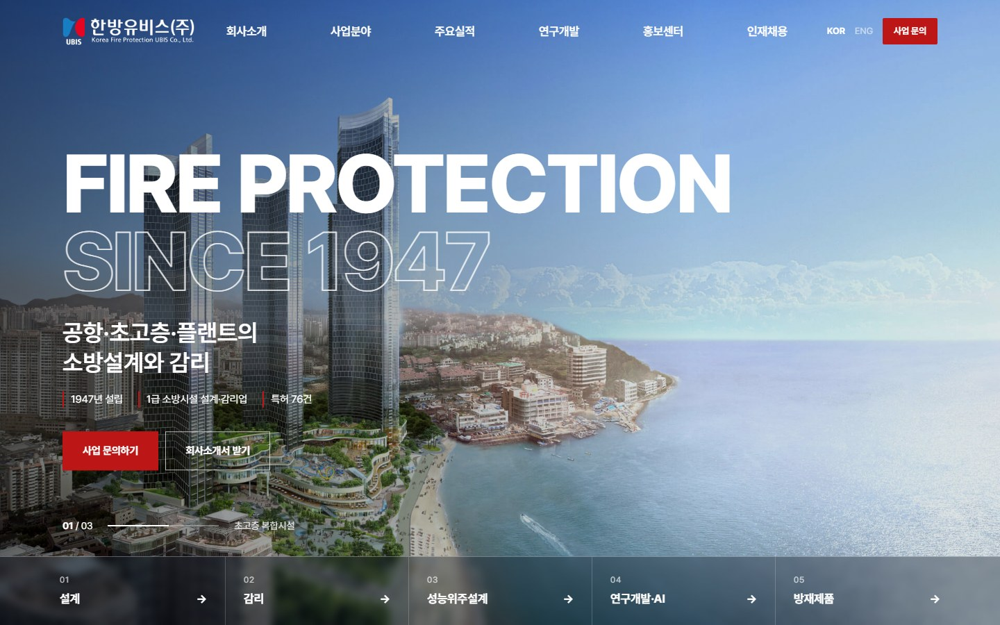
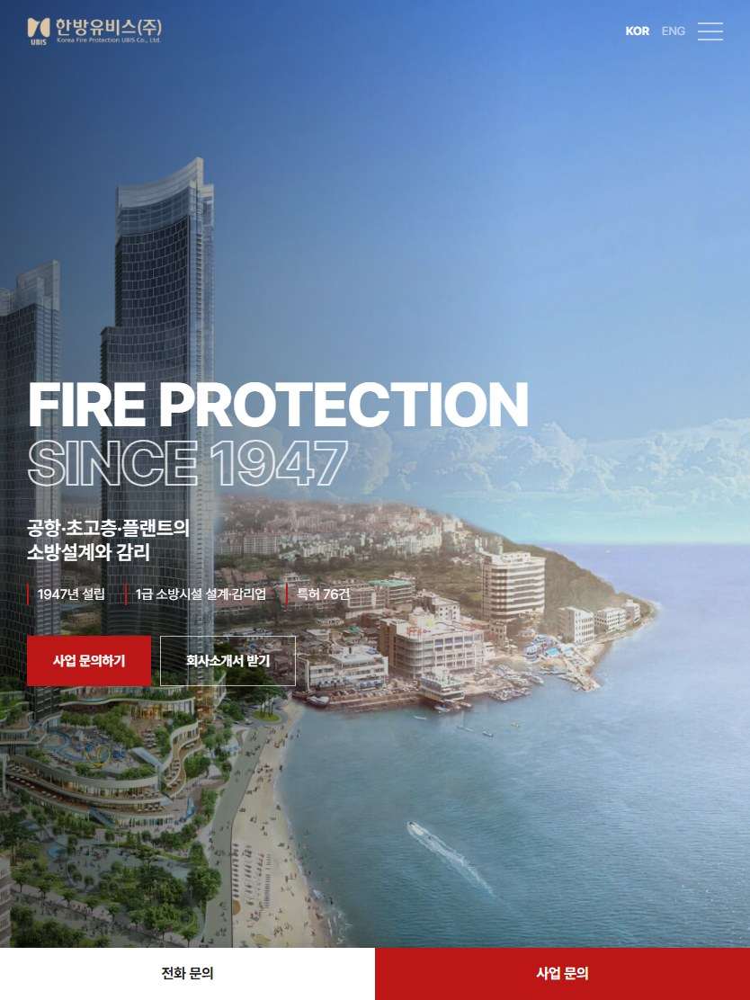
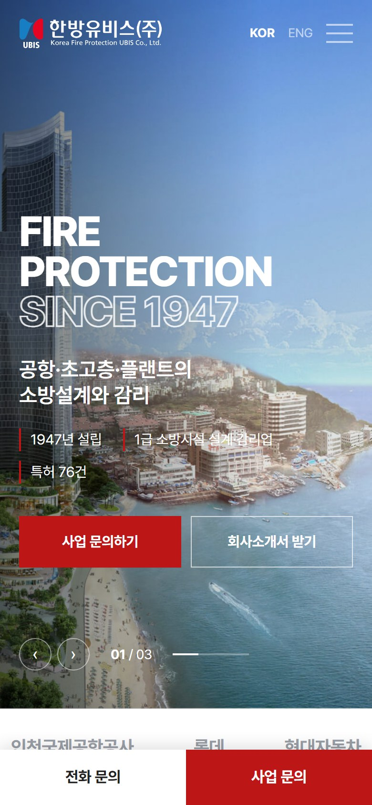
흰 바탕, 큰 사진, 가는 선. 설계사무소 포트폴리오처럼 실적 목록이 중심이고, 줄을 누르면 사례(과제·수행·결과)가 펼쳐집니다.
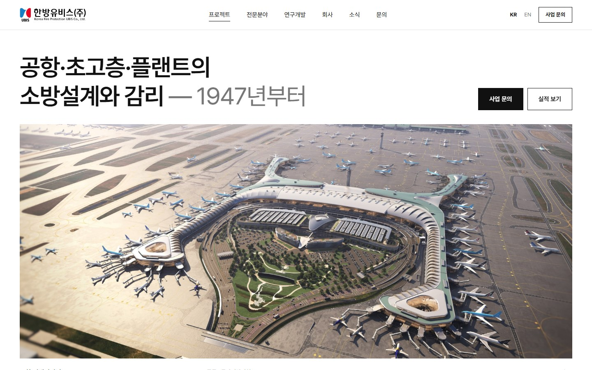
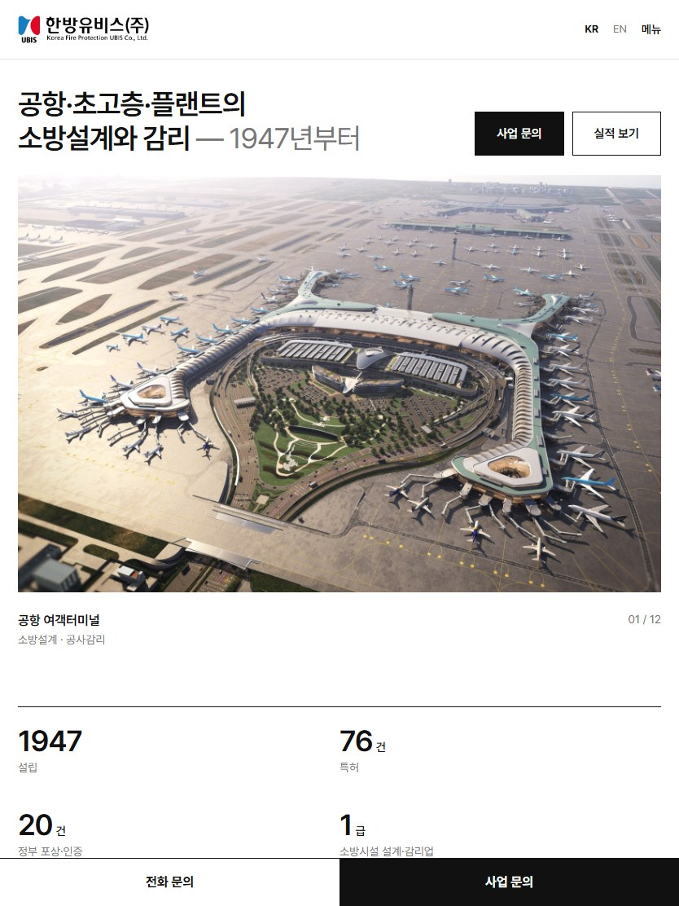
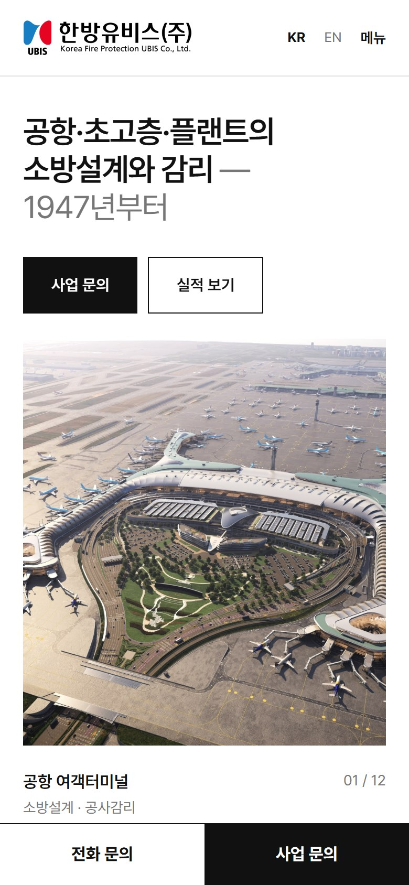
어두운 바탕의 고급 기업형. 첫 화면은 슬라이드마다 큰 영문 단어(DESIGN · SUPERVISION · RESEARCH)가 바뀌고, 스크롤하면 회사 소개 문장이 한 단어씩 밝아집니다.
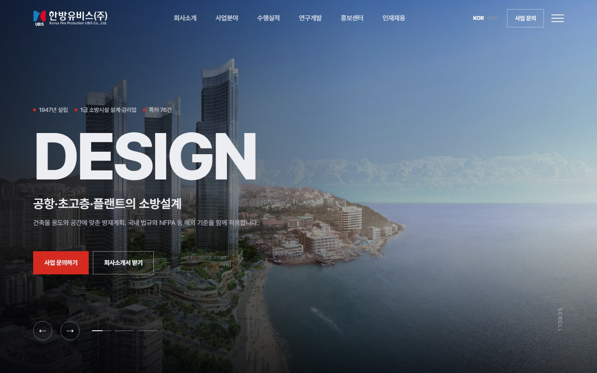
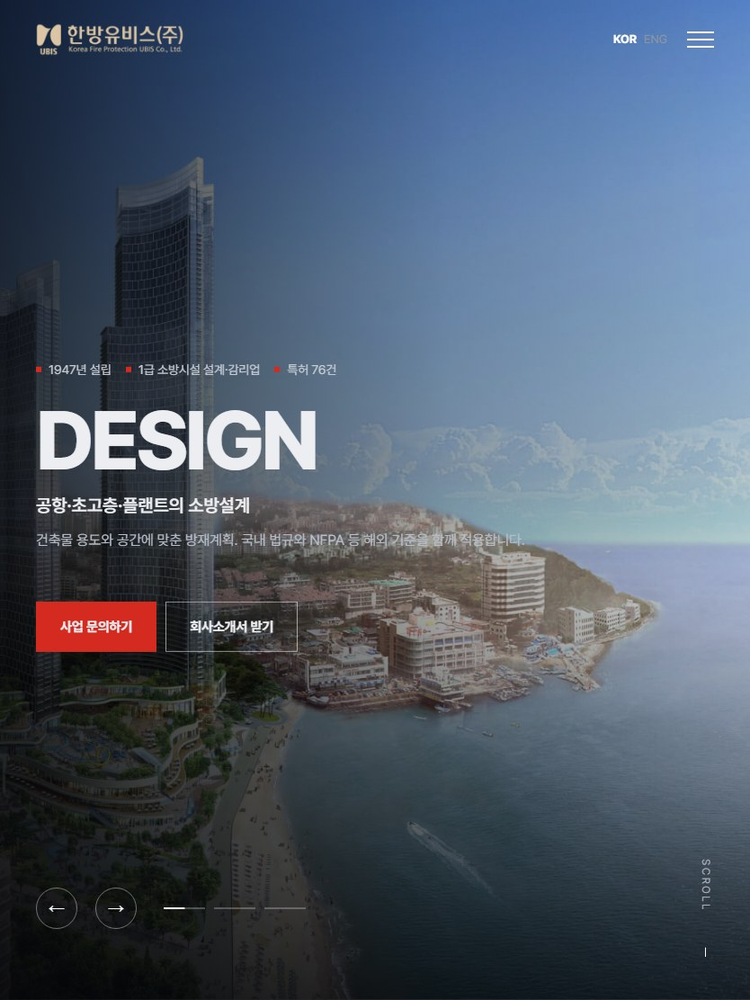
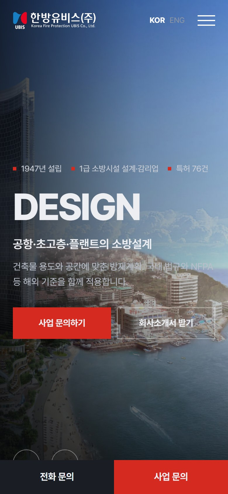
흰 바탕에 큰 영문 글자 "SAFETY, ENGINEERED"가 사진과 겹치는 첫 화면. 사업분야·발주처 유형을 탭으로 골라 보고, 홍보영상 띠와 새소식으로 마무리합니다.
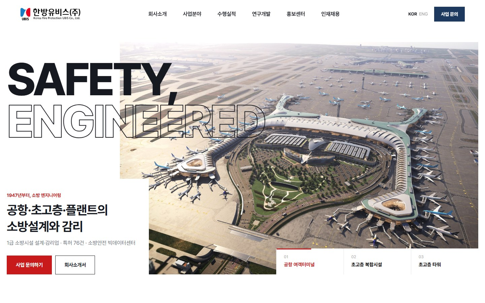
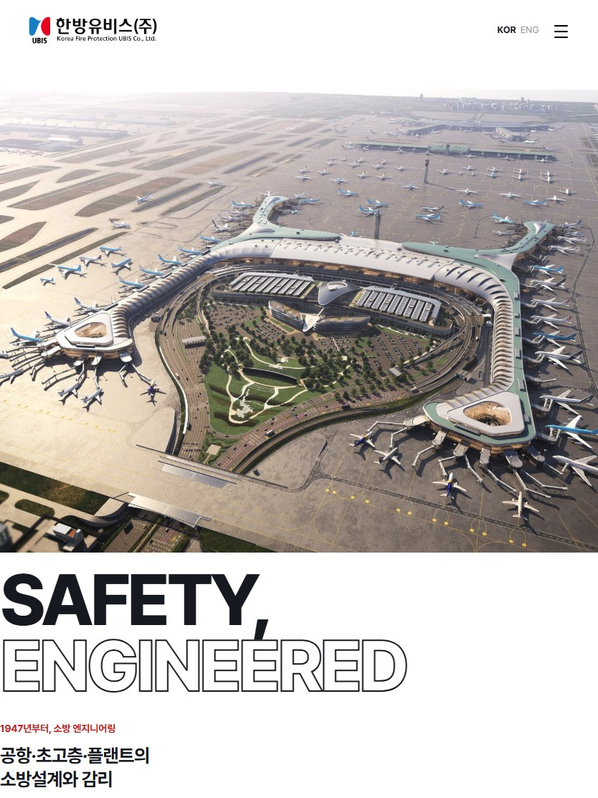
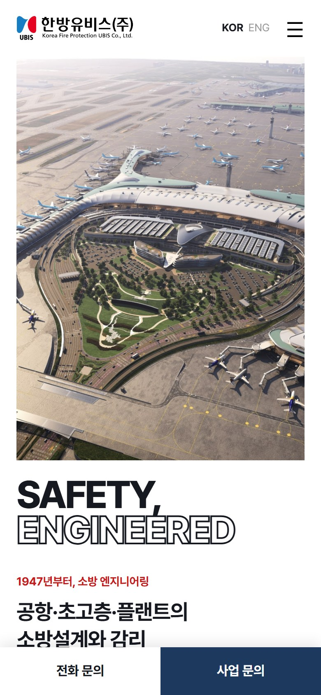
어느 시안을 골라도 같이 씁니다. 오픈 뒤 글·사진을 고치느라 개발자를 부를 일이 없도록, 홈페이지의 모든 내용을 담당자가 직접 고칩니다.
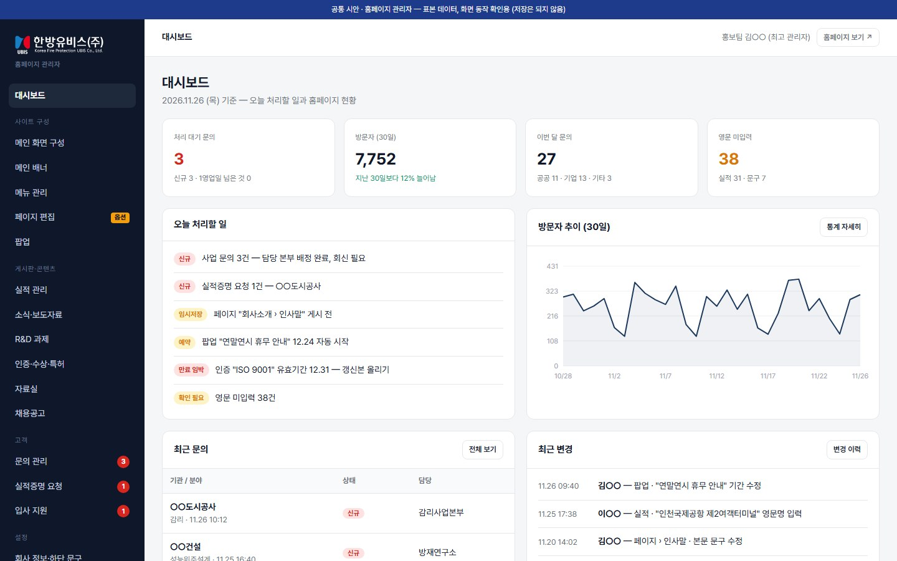
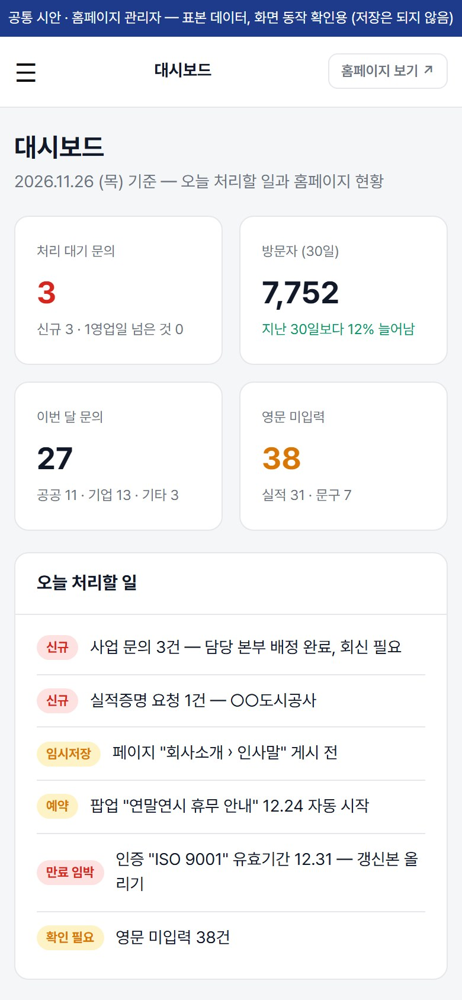
한방 · 한방유비스 · 케이유비스 · AI 계열사(가칭)의 홈페이지는 각각 따로 있으므로 연결만 합니다. "자료 받아서 작성"으로 표시한 곳은 아직 내용이 없는 자리입니다.
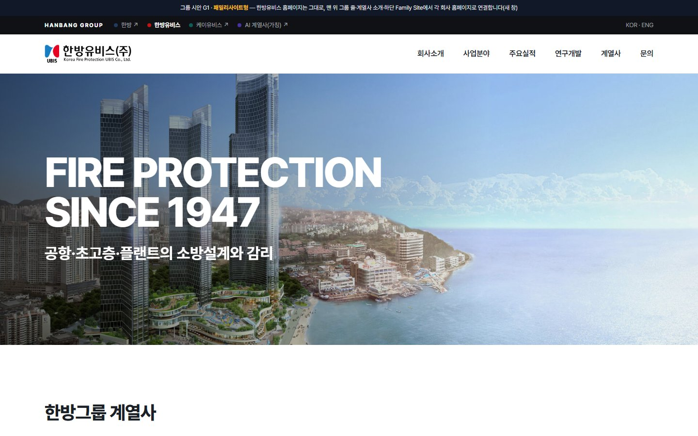
한방유비스 사이트 맨 위 그룹 줄 + 계열사 카드 + 하단 Family Site
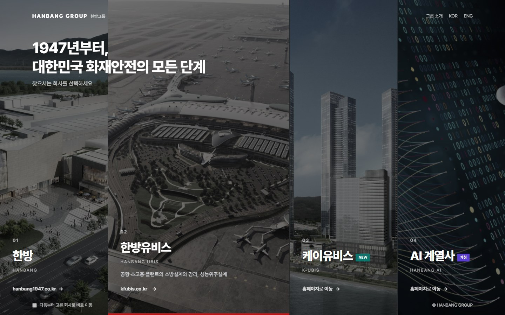
그룹 주소로 들어오면 회사를 골라 각 홈페이지로 이동 (고른 회사 기억)
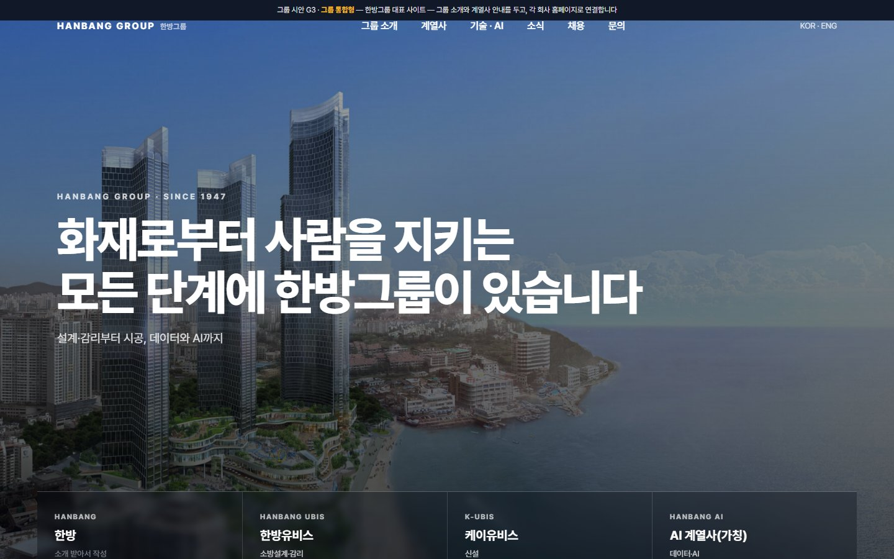
한방그룹 대표 사이트 — 그룹 소개·계열사 탭·바로가기·소식
"한방"으로 검색될 그룹 주소가 필요하므로 그룹 소개와 계열사 바로가기를 담은 G3를 가볍게 만들고, 한방유비스 사이트에는 G1의 그룹 줄·Family Site를 넣어 서로 오가게 합니다. 그룹 소개 글 준비가 어렵다면 G2로 먼저 열 수 있지만 검색 노출 효과는 약합니다.